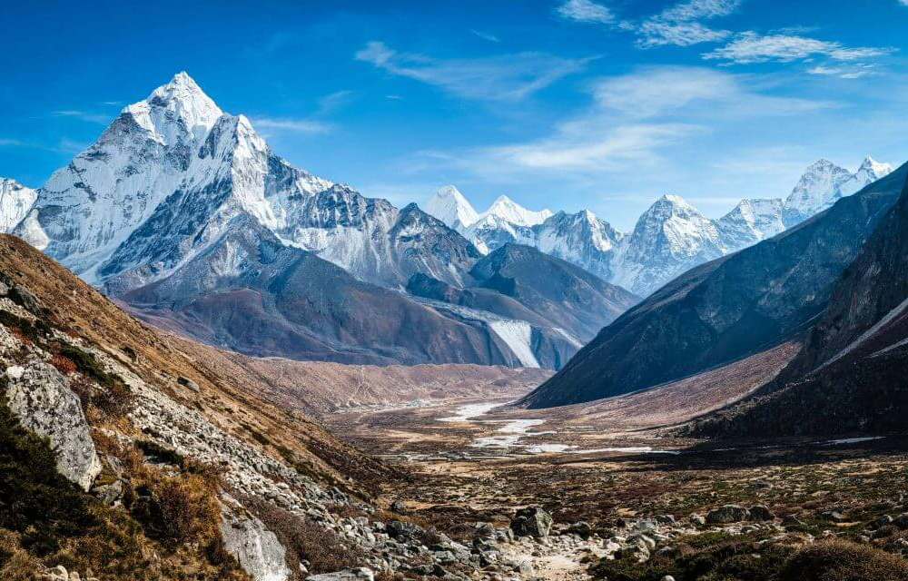
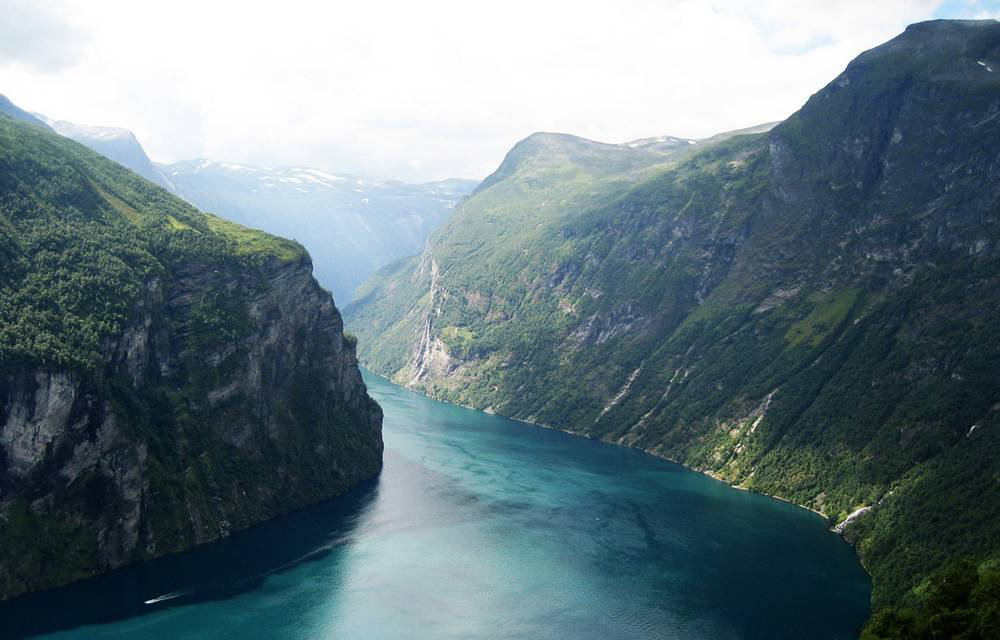

About Us
Stone Moutain is based in Haines, Alaska, a small town located near the top of the Inside Passage. Haines borders Glacier Bay National Park. The park and the adjacent 27 million acres, including Wrangell-St. Elias National Park, comprise the largest protected wilderness area in the world.
Stone Mountain has been the premiere outfitter and guide service in Southeast Alaska. Our expedition centers in Haines and Skagway provide the highest level of support for our groups to embark on amazing ski and snowboard adventures.
Find true wilderness by trekking through some of the most picturesque alpine tundra, jagged peaks and winding creeks in the largest protected landscape on the planet. There are many different hiking options in this magnificent area.
Latest Trip
The Himalayas cover a vast area but in general the best months to visit are late October until early May, depending on the exact location and altitude of the trek. An exception is Ladakh, where tourist facilities are only open between May and September.
Check out the article here...Latest Trip
Geirangerfjord is the jewel in the crown of the Norwegian fjords. It is a fairytale landscape with its majestic, snow-covered mountain tops, wild and beautiful waterfalls, lush green vegetation and the deep, blue fjord. Take a fjord sightseeing trip and experience it all.
Check out the article here...